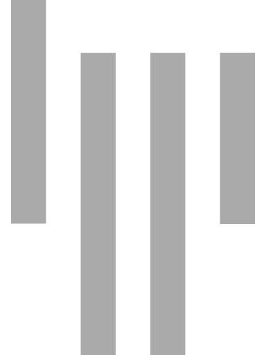
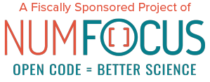

Matplotlib: Visualization with Python¶
Matplotlib is a comprehensive library for creating static, animated, and interactive visualizations in Python.
Matplotlib makes easy things easy and hard things possible.
Create
Develop publication quality plots with just a few lines of code
Use interactive figures that can zoom, pan, update...
Customize
Take full control of line styles, font properties, axes properties...
Export and embed to a number of file formats and interactive environments
Extend
Explore tailored functionality provided by third party packages
Learn more about Matplotlib through the many external learning resources
Documentation¶
To get started, read the User's Guide.
Trying to learn how to do a particular kind of plot? Check out the examples gallery or the list of plotting commands.
Join our community!¶
Matplotlib is a welcoming, inclusive project, and everyone within the community is expected to abide by our code of conduct.
Get help
Join our community at discourse.matplotlib.org to get help, discuss contributing & development, and share your work.
If you have questions, be sure to check the FAQ, the API docs. The full text search is a good way to discover the docs including the many examples.
Check out the Matplotlib tag on stackoverflow.

Short questions may be posted on the gitter channel.
News
To keep up to date with what's going on in Matplotlib, see the what's new page or browse the source code. Anything that could require changes to your existing code is logged in the API changes file.
- Tweet us at @matplotlib!
- See cool plots on @matplotart Instagram!
- Check out our Blog!
Development
Matplotlib is hosted on GitHub.
- File bugs and feature requests on the issue tracker.
- Pull requests are always welcome.
It is a good idea to ping us on Discourse as well.
Mailing lists
- matplotlib-users for usage questions
- matplotlib-devel for development
- matplotlib-announce for project announcements
Toolkits¶
Matplotlib ships with several add-on toolkits,
including 3D plotting with mplot3d, axes helpers in axes_grid1 and axis
helpers in axisartist.
Third party packages¶
A large number of third party packages extend and build on Matplotlib functionality, including several higher-level plotting interfaces (seaborn, HoloViews, ggplot, ...), and a projection and mapping toolkit (Cartopy).
Citing Matplotlib¶
Matplotlib is the brainchild of John Hunter (1968-2012), who, along with its many contributors, have put an immeasurable amount of time and effort into producing a piece of software utilized by thousands of scientists worldwide.
If Matplotlib contributes to a project that leads to a scientific publication, please acknowledge this work by citing the project. A ready-made citation entry is available.
Open source¶

Matplotlib is a Sponsored Project of NumFOCUS, a 501(c)(3) nonprofit charity in the United States. NumFOCUS provides Matplotlib with fiscal, legal, and administrative support to help ensure the health and sustainability of the project. Visit numfocus.org for more information.
Donations to Matplotlib are managed by NumFOCUS. For donors in the United States, your gift is tax-deductible to the extent provided by law. As with any donation, you should consult with your tax adviser about your particular tax situation.
Please consider donating to the Matplotlib project through the NumFOCUS organization or to the John Hunter Technology Fellowship.
The Matplotlib license is based on the Python Software Foundation (PSF) license.
There is an active developer community and a long list of people who have made significant contributions.